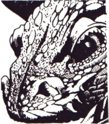
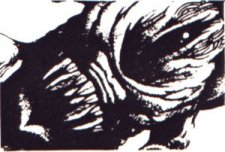
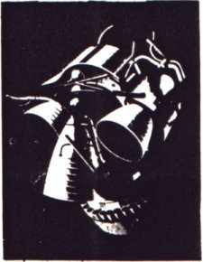

Picocon 4 Preview

An article advertising Picocon 4, which appeared in Felix p.7, on 7th February 1986
What's it all About?
As an ardent SF fan, people frequently ask me certain questions (well maybe not, but it's one way to start an article. The most common of these goes along the lines of 'Why do you like reading all that juvenile stuff about Bug Eyed Green Monsters and silly ray guns?' I usually have two answers for this question. One is very short, consisting of two words, one of which is 'off'. Since this reply would not improve our image among the esteemed readers of this publication I shall now resort to my second, longer answer.

SF (not sci-fi, an abbreviation all time fans loathe) as we know it today has its roots in two very different places. The one most people think of is the 'pulp' American magazine of the thirties and forties, famous for what many people now associate with Science fiction - bug eyed monsters, ray guns, phallic spaceships and all that. Indeed it is the ghost of the pulps that still haunts us. The other form of proto-SF is the much more respectable 'Science Romances' of H G Wells, Olaf Stapledon and other Englishmen of the period between the World Wars. Their tales were far more intellectually stimulating and of much greater literary ability. They dealt with real questions of political, philosophical or human interest. Wells' The Time Machine or Stapledon's Last and First Men are prime examples. Indeed the latter is still regarded by many as being both the finest SF ever written and the best piece of literature to come out of England between the wars.
What became of these English bastions of SF literature? Well, they died. For many years all the SF that remained was in the style of American pulp. At this point, in the 40's and 50's Hollywood got hold of pulpish SF and filmed it, producing what most people think of as the archetypical SF film - distinctive features being bad story, cheap effects, lack of characterization, totally unorganised etc. etc.
However, while Hollywood was butchering SF's public image, the writers were getting their act together and producing some decent stuff. In the US such authors as Silverberg, Pohl, Sheckley, and Leiber started to drag SF up from the sorry state it was in. Then in the 60's, England the so called New Wave authors, like Moorcock, Aldiss and Ballard started producing work which was as good or better than contemporary literature. J G Ballard last year nearly won the Booker Prize, and Mike Moorcock has been praised so highly by modern critics that you'd think he was the greatest living writer. Some people might agree.
Since then the ghetto walls surrounding SF have continued to fall, and it is no longer a separate and 'worthless' art form. It's a pity the film makers and TV producers still think they live in the so called Golden Age of SF, whe EE 'Doc' Smith spaceships ruled the subspace lanes and Q-beams fried the vile slimy aliens, the days when men were men and women did what they were told.
These days are over, and SF is set to conquer the literary universe!
The other question I'm frequently asked this time of year, (and this one isn't just a way of getting an article going) is 'what's happening at PICOCON? For those of you who don' know, PICOCON is SF SOC's own mini-convention. This is a gathering of people interested in SF (though that's not obligatory) to see SF Films, hear speakers (authors or generally interesting people) and play competitions of a generally SF nature. One thing we're doing this year, which we are especially pleased about, is showing videos of old TV programmes. SF on televisions is occasionally very well done, and almost always disappears once you've seen it, never to return again. Also, since many people were first introduced to Science Fiction by television, they have pleasant memories of TV programs from their youth. At PICOCON and a secret event planned later this term, you'll get to see some of your favourite TV Science Fiction. So, without further ado, here is the PICOCON timetable. Oh and another thing, PICOCON 4 is on all day Saturday 15th Feb in the Union Dining Hall and SCR. It starts at 10am and continues for at least 12 hours at the bargain price of £2.50. Here is the programme of events, hope to see you there.